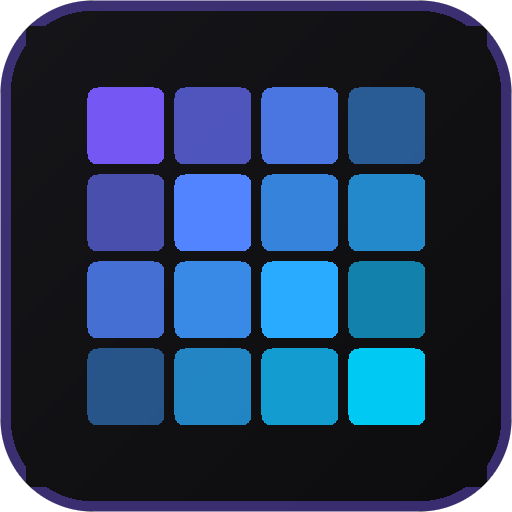

Pixel Mosaic Tool
画像に本格ピクセルモザイクをかける編集アプリ。
下のボタン1つで Android にインストールできます。
- 長辺の1/100を自動で推奨モザイクサイズに
- ブラシ／矩形で複数箇所に平均色モザイク
- Undo 35段階・原画比較・完全オフライン動作
- 画像は端末内だけで処理され、外部送信されません
インストールできるか確認しています…
手動でインストールする手順 (Android / Chrome)
- Chrome 右上の ⋮ メニューを開く
- 「アプリをインストール」 または 「ホーム画面に追加」をタップ
- 確認画面で 「インストール」をタップ
※ インストールには HTTPS 配信と Chrome が必要です。
LINE等のアプリ内ブラウザでは表示できないため、その場合は Chrome で開き直してください。